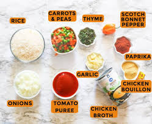

Jollof Rice is a rich, tomato-based rice dish cooked across West Africa, famous for its deep orange-red color and smoky bottom layer — the coveted "party jollof" flavor that comes from slow cooking over wood fire or high heat. This recipe serves a crowd and tastes even better the next day.
.jpg)
Classic party Jollof Rice — rich, smoky, and perfectly seasoned.
Recipe Details
Prep Time
20 min
Cook Time
55 min
Servings
8 – 10
Difficulty
Medium
Ingredients

- 3 cups long-grain parboiled rice, washed and drained
- 6 medium roma tomatoes, blended
- 3 red bell peppers (tatashe), blended
- 2 scotch bonnet peppers (or to taste), blended
- 1 large yellow onion, half blended, half sliced
- ⅓ cup vegetable oil or palm oil
- 2 cups chicken stock (or water)
- 2 teaspoons curry powder
- 1 teaspoon thyme
- 2 seasoning cubes (e.g., Maggi or Knorr), crushed
- Salt to taste
- 1 bay leaf
Instructions
- Make the tomato base: Blend the tomatoes, red bell peppers, scotch bonnets, and half the onion until smooth. Set aside.
- Fry the base: Heat the oil in a large heavy-bottomed pot over medium-high heat. Add the sliced onion and fry until golden. Pour in the blended tomato mixture and cook, stirring frequently, for 25–30 minutes until the raw smell is gone and the paste turns deep red.
- Season: Add curry powder, thyme, crushed seasoning cubes, bay leaf, and salt. Stir well and cook for another 2 minutes.
- Add rice and stock: Stir in the washed rice, then pour in the chicken stock. The liquid should just barely cover the rice. Taste and adjust seasoning if needed.
- Cover and steam: Bring to a boil, then reduce heat to very low. Cover tightly with foil first, then the pot lid. Cook for 25–30 minutes until the rice is tender and the liquid is fully absorbed.
- Get the smoky bottom (optional): For that party jollof flavor, remove the foil and turn the heat to high for 2–3 minutes at the end — you want a slight crust at the bottom, not a burn!
- Rest and serve: Remove from heat, fluff gently with a fork, and let it rest covered for 5 minutes before serving.
Tips & Notes
Pro tips for the best Jollof:
- Always fry the tomato paste long enough — under-fried paste makes the rice taste sour.
- Use parboiled rice (like Uncle Ben's or Golden Sella) for best results; it holds its shape without turning mushy.
- The foil seal is the secret to perfectly cooked, fluffy rice — don't skip it.
- For extra depth, substitute half the stock with the water used to boil your chicken.
- Leftovers taste even better the next day once the flavors have fully developed.
Nutrition Facts (per serving, approx.)
| Nutrient | Amount |
|---|---|
| Calories | 380 kcal |
| Carbohydrates | 62 g |
| Protein | 7 g |
| Total Fat | 11 g |
| Sodium | 520 mg |
| Fiber | 3 g |
Recipe Source
Inspired by traditional West African cooking. For more variations, visit All Nigerian Recipes — Jollof Rice .